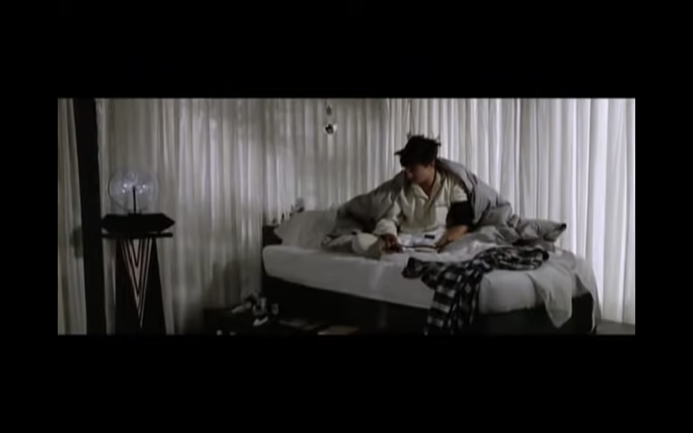

"FERRIS BUELLER'S DAY OFF"
written & directed by
JOHN HUGHES
SYNOPSIS
Ferris Bueller (Matthew Broderick) has an uncanny skill at cutting classes and getting away with it. Intending to make one last duck-out before graduation, Ferris calls in sick, "borrows" a Ferrari, and embarks on a one-day journey through the streets of Chicago. On Ferris' trail is high school principal Rooney (Jeffrey Jones), determined to catch him in the act.
23 INT. BOY'S BEDROOM 23
It's a dark, dreary sick room. Shades drawn, floor strewn with used tissues, nightstand a still-life of over the counter remedies. A high school boy, CAMERON: FRYE, is laying in bed. We don't see his face, only a silhouette with a thermometer sticking out his mouth. U2's SUNDAY BLOODY SUNDAY is playing. He's mumbling random words.
CAMERON: (weak) Hello?
FERRIS' VOICE: CAMERON! What's happening?
CAMERON: Very little.
FERRIS' VOICE: How do you feel?
CAMERON: Shredded.
FERRIS' VOICE: Is your mother in the room?
CAMERON takes the thermometer out of his mouth.
CAMERON: She's not home. Where are you?
FERRIS' VOICE: Home.
24 INT. FERRIS' FAMILY ROOM. FERRIS 24
Ferris is sprawled out in the chair.
FERRIS: I'm taking the day off. Get dressed and come over.
CAMERON'S VOICE: I can't. I'm sick.
FERRIS: It's all in your head. Come on over.
25 INT. CAMERON'S ROOM 25
CAMERON's insistent.
CAMERON: I feel like complete shit, Ferris. I can't go anywhere.
FERRIS' VOICE: I'm sorry to hear that. Now, come on over and pick me up.
Ferris disconnects. CAMERON slowly hangs up the phone.
CAMERON: I'm dying.
The phone rings again. CAMERON hits the speaker button.
FERRIS' VOICE: You're not dying. You just can't think of anything good to do.
26 INT. FERRIS' FAMILY ROOM 26
Ferris hangs up.
FERRIS: If anybody needs a day off, it's cameron. He has alot of things to sort out before he graduates. He can't be wound this tight and go to college. His roommate'll kill him. I've come close myself. But I like him. He's a little easier to take when you know why he's like he is. The boy cannot relax. Pardon by French but cameron is so tight that if you stuck a lump of coal up his ass, in two weeks you'd have a diamond.
61 INT. FERRIS' ROOM 61
He's on the telephone. As he speaks he does a little MacPainting on his MacIntosh. A Modigliani nude.
FERRIS: i'm serious, man. this is bullshit, making me wait around the house for you.
62 INT. CAMERON'S BEDROOM 62
Cameron's back in bed.
CAMERON: do you know what my diastolic is?
read full script here.
Ferris Bueller (Matthew Broderick) has an uncanny skill at cutting classes and getting away with it. Intending to make one last duck-out before graduation, Ferris calls in sick, "borrows" a Ferrari, and embarks on a one-day journey through the streets of Chicago. On Ferris' trail is high school principal Rooney (Jeffrey Jones), determined to catch him in the act.
23 INT. BOY'S BEDROOM 23
It's a dark, dreary sick room. Shades drawn, floor strewn with used tissues, nightstand a still-life of over the counter remedies. A high school boy, CAMERON: FRYE, is laying in bed. We don't see his face, only a silhouette with a thermometer sticking out his mouth. U2's SUNDAY BLOODY SUNDAY is playing. He's mumbling random words.
CAMERON: (weak) Hello?
FERRIS' VOICE: CAMERON! What's happening?
CAMERON: Very little.
FERRIS' VOICE: How do you feel?
CAMERON: Shredded.
FERRIS' VOICE: Is your mother in the room?
CAMERON takes the thermometer out of his mouth.
CAMERON: She's not home. Where are you?
FERRIS' VOICE: Home.
24 INT. FERRIS' FAMILY ROOM. FERRIS 24
Ferris is sprawled out in the chair.
FERRIS: I'm taking the day off. Get dressed and come over.
CAMERON'S VOICE: I can't. I'm sick.
FERRIS: It's all in your head. Come on over.
25 INT. CAMERON'S ROOM 25
CAMERON's insistent.
CAMERON: I feel like complete shit, Ferris. I can't go anywhere.
FERRIS' VOICE: I'm sorry to hear that. Now, come on over and pick me up.
Ferris disconnects. CAMERON slowly hangs up the phone.
CAMERON: I'm dying.
The phone rings again. CAMERON hits the speaker button.
FERRIS' VOICE: You're not dying. You just can't think of anything good to do.
26 INT. FERRIS' FAMILY ROOM 26
Ferris hangs up.
FERRIS: If anybody needs a day off, it's cameron. He has alot of things to sort out before he graduates. He can't be wound this tight and go to college. His roommate'll kill him. I've come close myself. But I like him. He's a little easier to take when you know why he's like he is. The boy cannot relax. Pardon by French but cameron is so tight that if you stuck a lump of coal up his ass, in two weeks you'd have a diamond.
61 INT. FERRIS' ROOM 61
He's on the telephone. As he speaks he does a little MacPainting on his MacIntosh. A Modigliani nude.
FERRIS: i'm serious, man. this is bullshit, making me wait around the house for you.
62 INT. CAMERON'S BEDROOM 62
Cameron's back in bed.
CAMERON: do you know what my diastolic is?
read full script here.



hello?
cameron, baby! what's happening?
very little.
how do you feel?
shredded.
is your mother in the room?
she's in decatur. unfortunately, she's not staying.
where are you?
home. i'm taking the day off. get dressed and come over.
i can't. i'm sick.
it's all in your head. come on over.
i feel like complete shit, ferris. i can't go anywhere.
i'm sorry to hear that. now, come on over and pick me up.
i'm dying.
you're not dying. you just can't think of anything good to do.
if anybody needs a day off, it's cameron.
he has alot of things to sort out before he graduates.
he can't be wound this tight and go to college.
his roommate'll kill him.
i've come close myself. but I like him. he's a little easier to
take when you know why he's like he is. the boy cannot relax.
pardon my french, but cameron is so tight that if you stuck
a lump of coal up his ass, in two weeks you'd have a diamond.
i'm serious, man. this is ridiculous,
making me wait around the house for you.
do you know what my diastolic is?